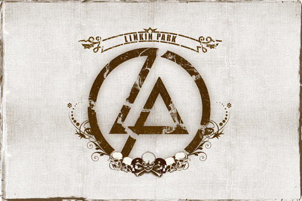

 Lying from you When I pretend Everything is what I want it to be I look exactly like what you had always wanted to see When I pretend I can forget about the criminal I am Stealing second after second just 'cause I know I can But I can't pretend this is the way it will stay I'm just [Trying to bend the truth] I can't pretend I'm who you want me to be So I'm Lying my way from you [No, no turning back now] I wanna be pushed aside So let me go [No, no turning back now] Let me take back my life I'd rather be all alone [No turning back now] Anywhere on my own 'Cause I can see [No, no turning back now] The very worst part of you